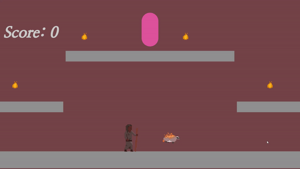

Drew Peppley
| Storyteller | Developer | Programmer |

Hi, I'm Drew, and I like to tell stories and make games! I believe that games are the perfect tool for generating empathy, and I want to create cool things and build worlds which might allow people to see the world in a new way. Scroll down to see what I've made!
Project Sage
C#, Unity | Spring 2025
IN PROGRESS
"Project Sage" is a text-based RPG where the player takes the role of a student at a magical academy in an 80's-style fantasy setting who sees the future of a grim event at a private party her friends are going to, and must avert the future from occurring. Players build pools of dice representing attributes, items, information, and circumstantial bonuses to accomplish tests and challenges.
This is a side project a group of friends and I are working on, with the goal of functioning as a small indie studio. I am working as the lead designer for the game, building and playtesting the game's RPG mechanics, ensuring they are as tight as possible for the type of experience we're building. My dialogue system I built for previous projects is implemented in this game, and I will be doing additional supplyementary programming as soon as my design work is complete.
S.S. Theseus
Blueprints, Unreal Engine | Fall 2024 – Spring 2025

S.S. Theseus is a co-op arcade game where players take on the role of a crew of robots aboard the emponymous S.S. Theseus as it travels through space. Players must keep the ship intact through putting out fires, restocking fuel to keep the ship going and providing ammo for the turrets to fight off enemies. The players win if the ship reaches its destination before it is destroyed by attacking enemies or fire.
This project was one of the first projects I made in Unreal Engine. The project was one of two projects built for a multiplayer game development class with a group of four, all of us being new to the engine. I personally built a majority of the core gameplay loop, including the underlying systems, enemy and turret AI, and couch-coop systems. Other group members did 2D and 3D art, built and implemented a custom controller, and created supplementary code.
Zoo Wars
Blueprints, Unreal Engine | Fall 2024 – Spring 2025
IN PROGRESS
Zoo Wars is a two player card battler fused with tower defense elements. Each player has a deck of ten cards, one base, and three towers. Cards can be played at each lane, which fight the opposing cards at the end of each turn. When a lane's defenders are defeated, cards will attack the lane's tower, then the base once that is destroyed. Players must destroy the enemy base to win!
The second of my two games for my Unreal Engine multiplayer class, our objective this game was to create a networked multiplayer game. I built the netcode for the game, which was an interesting challenge since it was the first time I'd worked on something of this type. I also programmed the core gameplay loop and underlying mechnics of the game, while my group members did game design, 2d and 3d art and asset gathering, and built the UI and menus for the game.
Gods and Shadows
C#, Unity | Summer 2024

Gods and Shadows is available on itch.io!
Gods and Shadows is a game developed with Make-A-Wish Idaho in order to fulfill the wish of a kid in the program. He wanted a game made based off of his idea, and our team was contracted work with the client to fulfill his vision as best as we could. This game is a party-based JRPG which follows a group of adventurers who are looking to slay a dragon that has been plaguing the land by pledging themselves to one of three gods.
My contributions to this project included UI work, implementing my dialogue system from previous projects into a desktop environment and tailoring it to the needs of the project. Additionally, I worked on the class designs of each of the game's characters and narrative assistance with writing and editing.
Dungeon Security
C#, Unity | Spring 2023 – Spring 2024

In Dungeon Security, a virtual reality arcade game, the player takes on the role of a wizard working a dead-end job providing security for a powerful monster's dungeon, defending it from adventurers. Players may view rooms of the dungeon remotely through their crystal ball security cameras, and summon goblins to defend these rooms with their wand.
This project was one of the largest projects I was assigned in my university experience. Tasked with creating a virtual reality game from scratch over three semesters, I learned VR development, 3D modeling, audio design, and many more things for this project. Everything in this game was created by me, except for the animations which came from Mixamo.
Boise Quest
C#, Unity | Fall 2023 – Spring 2024
Boise quest is available on the App Store and Google Play Store
Boise Quest is an extension of the Freeman Tour project, in partnership with the city of Boise, focusing on the history of Julia Davis Park. In a scavenger hunt throughout the park, the player learns about the history of Boise itself and Julia Davis Park. The game is connected by multiple locations throughout the park, each of which has an agumented reality minigame or activity within, which can be started when a location is reached in real space.
I was the team lead for this project, assigning tasks and workflows, and heading client interaction. I continued the narrative from the Freeman tour project with new characters and a new plot, as well as remastering and expanding the user interface elements from the previous project.
Freeman Tour Project
C#, Unity | Summer 2023
The Freeman tour project is available on the App Store and Google Play Store
We created an augmented reality game which showcases the history of various parts of Boise, built to be showcased and played during a conference organized by Freeman, a global events company, in downtown Boise. This includes the history of J.R. Simplot, Boise's Egyptian Theater, and the history of the local Basque community, the largest Basque community in any city in the United States. Each of these is presented in a tour-like fashion through augmented reality minigames, scavenger hunts, and exhibits.
This was the first project that I took charge in leading, assisted by our primary project manager in the larger team. With a team of roughly half a dozen developers, I created the user interface using Unity's UI toolkit framework, worked with the team to collaborate on the game design, and headed the game's narrative and writing.
ACHD Roundabout Project
C#, Unity | Spring 2023

This project is a Virtual Reality simulation of a roundabout, designed to teaching people how to properly use a roundabout in an immersive, low-stress environment.
I was one of the programmers on the project's team, and I focused on creating an activity where the player is inside a car, and must control its speed along the road to safely make their way through the roundabout.
Anne Frank Memorial Project
Swift, Xcode | Summer 2022 – Fall 2022
Watch local news coverage of our app here!
The Anne Frank Memorial Project is an Augmented Reality experience designed for the Anne Frank Memorial in Boise. It covers the history of discrimination and its connections to modern day hate-based ideologies, showing how the spiral of injustice can quickly go from language to discrimination to extermination, how its effects have repeated many times throughout history, and are still happening today.
This was the first project I worked on as part of a professional development team. As one of the primary programmers on this project, I used the SwiftUI framework to implement the lesson plans we were provided, while assisting with the RealityKit AR sections of the app where they were needed.
Deck of Many Spells
C#, Unity | Fall 2021

The Deck of Many Spells is the second major game I made in Unity, as part of a group project to design a 2D game with Augmented reality elements. The game involves a physical deck of cards (not showcased in the above video) that determine the level the player will try to complete. Three cards are drawn and scanned: the first determines the level's objective, the second the type of enemy, and the third the spell the player has access to.
As part of the group, my focus was on the player character's design and programming. I created the movement and animations for the player, including three unique spells. The fire spell was a projectile that could ricochet and pushes the player in the opposite direction, an ice spell that blocks projectiles and can smash enemies in melee, and a lightning spell that can teleport the player in a burst of deadly electricity.
Myrmidon
C#, Unity | Fall 2021
Myrmidon was my first true foray into game development in the Unity game engine. I wanted to tinker with the idea of a platformer where the player controlled two characters at once. This game has the player control the human character with the mouse, and their fire spirit companion with the keyboard.
The game was narratively based on an old D&D character of mine, a druid who sheperded spirits of fire to places of power and freed those enslaved by humanity. Mechanically, the game inspired by Brothers: A Tale of Two Sons, a puzzle/adventure game where the player controlled two characters each with a different half of a controller; I took my game more in the direction of a platformer than Brothers, however.
This project was completed individually, where every part of the project was made by me, aside from a required piece of starting code for the platforming.